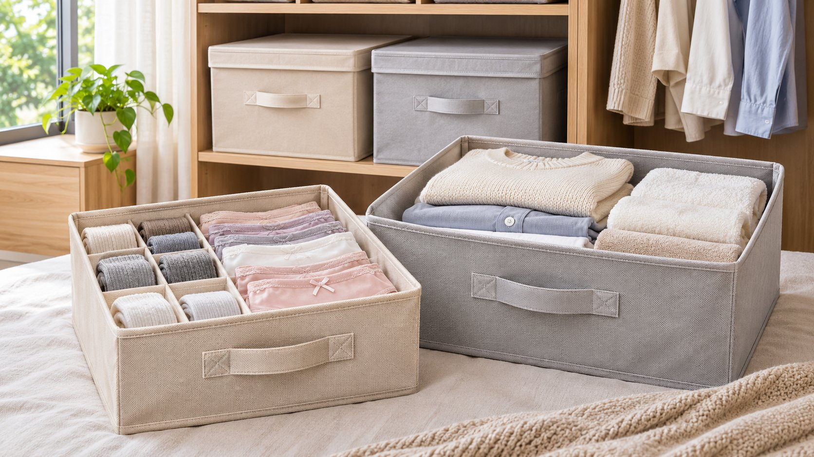
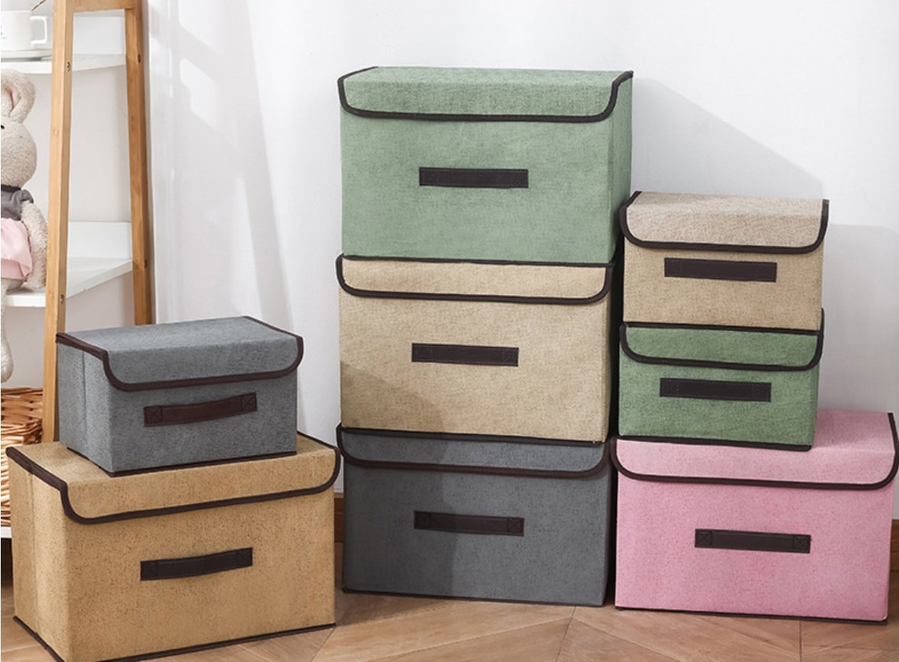
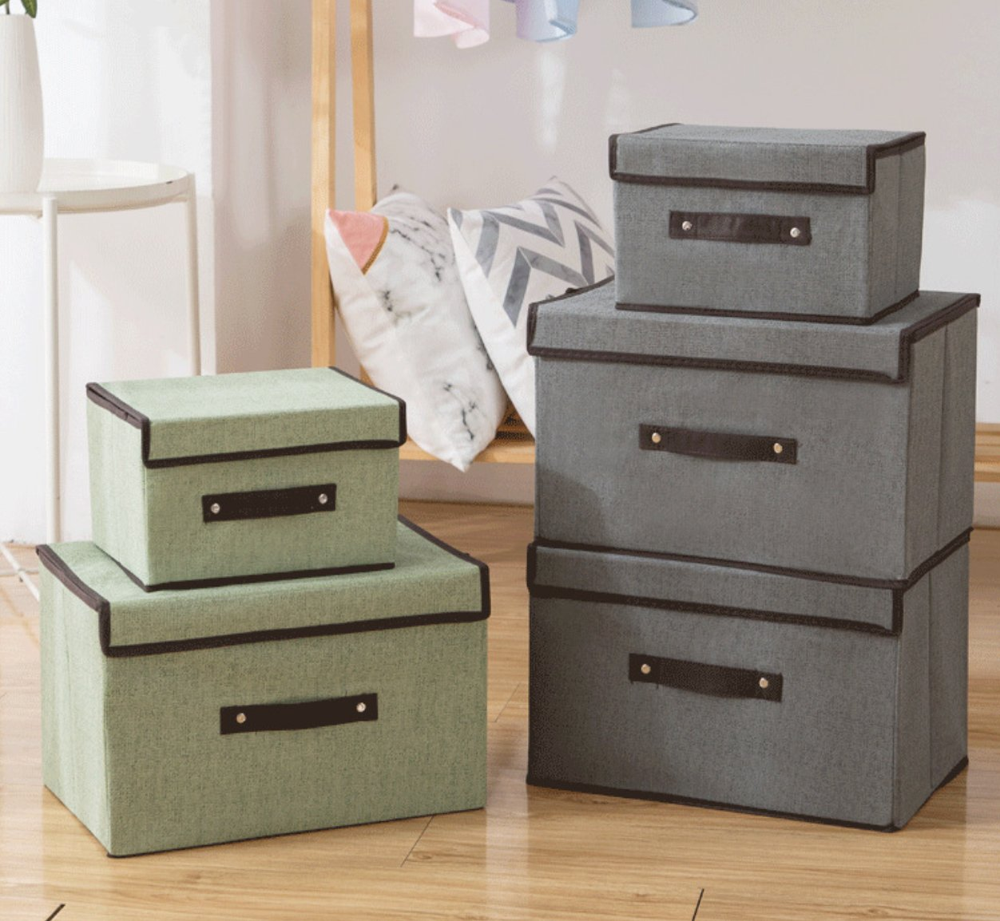
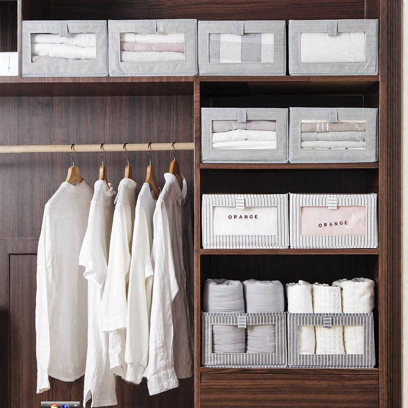

Big storage boxes get the shelf space, but the quiet money in 2026 is inside the drawers. Divided fabric organizers — trays with sewn-in compartments for socks, underwear, scarves, and folded knitwear — have become one of the fastest-moving SKUs in home organization. They're small, light, ship flat, and they solve the most repetitive complaint customers have: "my drawers are a mess." For retailers, that combination is hard to beat.

Why Small-Item Organizers Are Having a Moment
The organization boom of the past few years sold people big boxes. Once closets were tidy, attention moved to the last mess in the house: drawers. Three forces are driving the category in 2026:
- The capsule-wardrobe habit stuck. Consumers who folded down to fewer, better clothes need visible compartments — rolled socks and folded undergarments in divided trays are the visual signature of that lifestyle, all over social media.
- Organization content rewards the "before and after". A messy drawer transformed into neat rows of compartments is one of the most shareable formats in home content. Products that enable that reveal sell themselves on video.
- High repeat purchase. Nobody buys one drawer organizer. Customers come back tray by tray — dresser, bathroom, office, kids' rooms — making it a strong subscription-style repeat SKU for e-commerce brands.
What a Winning Drawer Program Looks Like
Importers who do well with drawer organizers rarely stock just one model. The assortment that moves:
- One divided tray (6–12 compartments) for socks, underwear, and accessories — the hero SKU and the one that stars in "after" photos.
- One or two half-width open boxes (30 x 15 cm) with webbing handles for rolled items, tees, and chargers — easy to pull out one-handed.
- One deep box (30 x 40 cm) for sweaters and bulkier folded pieces, sitting in the wardrobe rather than the drawer.
- One consistent color story. Oat beige, warm grey, and off-white dominate 2026: they match wood furniture and warm-minimalist interiors, and a matching set photographs like a premium system rather than loose bins.
Sold as a set, this covers a standard dresser in one purchase — and raises the average order value far above any single tray.
Design Details That Separate Premium From Basic
Drawer organizers touch clothing every day, so construction details matter more than in big storage boxes:
- Sewn-in dividers, not loose strips. Fixed compartments keep their shape after use; loose inserts drift and sag, and reviews punish them.
- Stiffened bottoms and sides. A 2–3 mm internal board keeps the tray square when the drawer is full and slides smoothly without folding.
- Webbing or fabric handles. Front grab handles turn the organizer into a pull-out "mini drawer" — a detail that lifts perceived value immediately.
- Linen-look fabric. The texture reads premium on camera and on shelf; plain non-woven remains the value option, but linen-look justifies a higher price point.
OEM Checklist Before You Order
Drawer organizers are simple products, but a few specification decisions decide whether you get a bestseller or a returns magnet:
- Match the tray to real drawers. Confirm internal drawer dimensions for your target markets — EU and US standard dressers differ, and a 5 mm oversize means the tray doesn't slide.
- Specify divider count and layout. Compartment grids are customizable per SKU; confirm the layout on a pre-production sample, not just a drawing.
- Check the fabric spec. Non-woven PP in 80–120 gsm is the value standard; ask for odor-free material and REACH/OEKO-TEX compliance where your market requires it.
- Plan branding early. Woven labels, printed bottoms, and hang tags are all low-cost OEM options — but MOQs (typically from ~500 pieces per design) apply per color and layout.
- Confirm fold-packing. Flat-fold packaging keeps container loading efficient; verify the tray pops back square after folding, using the stiffening board as the shape memory.
For the broader customization workflow, see our complete OEM storage box guide, and for material choices read non-woven fabric storage boxes explained.
Merchandising Tips: Selling Drawer Organizers
- Sell the drawer, not the tray. List images should show a fully organized drawer, not an empty product — the transformation is the product.
- Bundle by room. "Dresser set," "bathroom set," "nursery set" bundles outperform single-SKU listings and simplify choice for gift buyers.
- Fill compartments in photos. A tray with rolled socks and folded knitwear communicates capacity instantly; empty compartments leave buyers guessing on size.
Frequently Asked Questions
What sizes of divided drawer organizers sell best?
Shallow trays sized to standard dressers — around 30 x 30 cm for divided trays and 30 x 15 cm for half-width boxes, at 8–12 cm high — plus one deep 30 x 40 cm box for sweaters. That trio covers most bedroom and wardrobe drawers.
How are the compartments made?
Quality organizers use sewn-in fabric dividers over internal stiffening boards (2–3 mm), so compartments hold their shape through daily use. Loose insert strips shift over time and hurt reviews.
What fabric is best for drawer organizers?
Non-woven polypropylene (80–120 gsm) is the value standard and is color-customizable; linen-look woven polyester supports premium pricing. For organizers that touch clothing daily, verify odor-free material and REACH or OEKO-TEX compliance.
Can drawer organizers be customized with a logo?
Yes — woven labels, printed bottoms, and hang tags are standard OEM options, with Pantone color matching and customizable divider layouts. MOQs typically start around 500 pieces per design or color.
Our Take
Drawer organizers are the highest-frequency, lowest-risk entry point into the 2026 storage category: small to ship, cheap to sample, and naturally repeat-purchased. At SAVING Industry, we produce divided trays and fabric drawer boxes in Jinhua with sewn compartments, reinforced boards, woven-label branding, and full OEM/ODM customization — from sample to shipment in 20–35 days.
Building a Drawer Organizer Program?
Send us your drawer dimensions and target retail price — we'll propose a set layout, fabric spec, and branding options, with pre-production samples in days.
Get a Free QuoteRelated Articles

Color Sells: Why Colorful Fabric Storage Boxes Are 2026's Home Organization Trend
Muted, earthy tones are replacing plain grey in fabric storage — see the palette buyers want.
Read more →
Holiday 2026 Storage & Organization: A Buyer's Guide
Stock the right non-woven fabric storage products this holiday season — trends, checklist, and timing.
Read more →
Drawer Organization Hacks That Actually Last
Practical folding and zoning methods to keep every drawer tidy for good.
Read more →